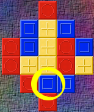
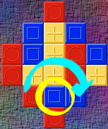
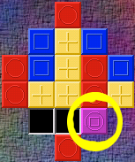
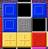
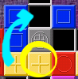
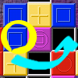
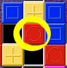

Copyright © 2001 by Nathan Thompson-Amato <ndt@wagonfixers.com> and Matt Mullen <matt@mattmullen.net>
Gnome Tesserae is a simple but addictive puzzle game in which the player tries to remove all the tiles on a mosaic.
Your goal is to remove all the tiles on a mosaic except the last one. There are several mosaics to choose from; to pick one, start a new game by selecting New Game from the Game menu. Pick the mosaic you'd like from the resulting dialog box. You can also choose between several difficulty levels in this dialog.
When you start a new game, the mosaic is filled with tiles of various colors. Each tile also has a shape imprinted on it that corresponds to its color. You can jump with any of these tiles in the right situation; see the Jumping Rules section for details.
To select a tile you want to jump with, click it once. A silver border will show up around the selected tile.
To jump over another tile, select a tile, then click the place on the mosaic where you want it to land.
To remove a tile, jump over it with another tile.
Suppose we have the mosaic shown below and we want to remove the circled tile:

To remove a tile, you jump over it with another tile. We could remove the circled tile by jumping over it with the red tile to its left:

But look! The tile we wanted to remove is gone, but the tile we jumped with has combined with the tile it landed on:

We'll learn how to deal with these combination tiles in the next step.
When two tiles are combined, they form a third tile that blends the colors and is imprinted with all the shapes from its composite tiles. To get rid of such a combination tile, we need to subtract each composite tile from it.
Suppose, for example, that part of our mosaic looks like this:

To get rid of the silver tile (a combination of red, blue, and yellow tiles), let's first subtract yellow:

Once we've done this, we can subtract blue:

And finally, we just have a red tile where we used to have a silver tile:

You can jump a tile in either of the following situations:
In either situation, the tile you're landing on must not already contain any of the colors from the tile you're jumping with.
When you select a tile, a silver highlight is placed on the tiles you can jump to.
If you don't like a move you've made, you can use the Undo move command from the Game menu to take it back.
To turn sound effects on or off, select Preferences from the Settings menu. Check the Sound Effects box to turn on sound effects; uncheck it to turn sound effects off. To make your changes take effect, use the OK or Apply button.
If you've discovered a bug that isn't listed above, or if you'd like to request a feature that doesn't yet exist, please let us know! Send email about the problem or desired feature to one of us:
This program is free software; you can redistribute it and/or modify it under the terms of the GNU General Public License as published by the Free Software Foundation; either version 2 of the License, or (at your option) any later version.
This program is distributed in the hope that it will be useful, but WITHOUT ANY WARRANTY; without even the implied warranty of MERCHANTABILITY or FITNESS FOR A PARTICULAR PURPOSE. See the GNU General Public License for more details.
A copy of the GNU General Public License is included as an appendix to the GNOME Users Guide. You may also obtain a copy of the GNU General Public License from the Free Software Foundation by visiting http://www.fsf.org/ or by writing to
Free Software Foundation, Inc.
59 Temple Place - Suite 330
Boston, MA 02111-1307
USA